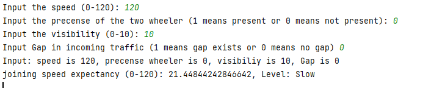
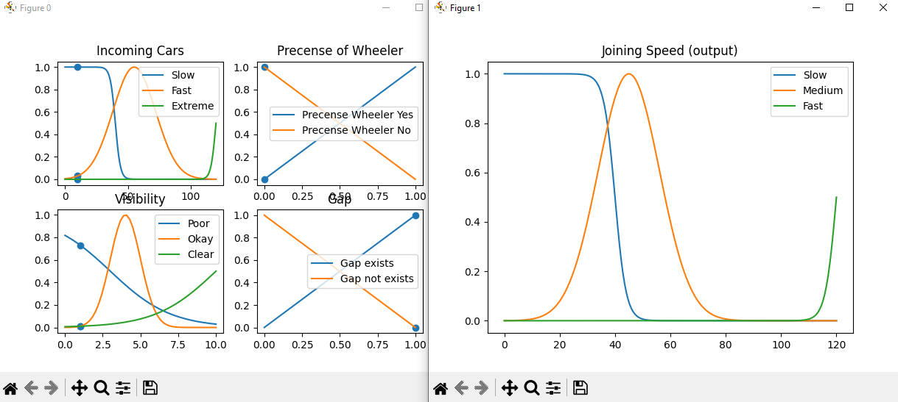

MSc AI · Fuzzy Logic (CT102) · Jul 2023
Fuzzy Highway
How fast should a car go on this stretch of road? My fuzzy-logic coursework answered with rules instead of a trained model. This is the original Python notebook, ported to run in your browser and checked against the library it was written for. Drag the sliders.
The seven rules, firing live
AND takes the smaller membership, OR the larger. Each rule cuts its output set at that strength.
Recommended speed limit
speeding.compute()
An error occurred: 'speed_limit'
try/except caught it and printed this.The whole decision, at a glance
Every combination of road (left to right) and gap (bottom to top) at the current traffic density. Red is a low limit, green a high one. Drag the traffic slider and watch the map change.
The browser engine reproduces scikit-fuzzy 0.5 exactly: across 510 test inputs (500 of them random) it gave identical results to 6 decimal places, and it fails on the same input the library does.
What it gets wrong
I kept these behaviours in the demo instead of fixing them, because they're the most useful part.
- One OR swallows the rest. Rule 1 says road poor or traffic dense or gap poor means a low limit. Any one of the three is enough, so a perfect road with a big gap still gets 16.7 when traffic is dense, and the careful AND rules hardly matter.
- Holes in the rule base. Seven rules don't cover every combination. A perfect road with no traffic and a middling gap fires nothing, and the program errors out. The decision map shows where the holes are.
- "Good" traffic means heavy traffic.
automf(3)names every input's terms poor, average and good by value, so for traffic density "good" just means a high number. Rule 7 reads oddly for the same reason. - What I changed: switch the rule base above to My rewrite. It has one AND rule for each of the 27 combinations, so every input fires something; no OR to let one input drown the rest; and labels that read as what they mean (light, moderate or heavy traffic; a small, medium or large gap). Same membership functions, same maths.
Where it came from
A group assignment, and the version that survived.
The group report
With two classmates I wrote Intelligent Joining Speed Determination on Highways using Fuzzy Logic: four inputs (speed of incoming traffic, a two-wheeler present, visibility, a gap in traffic), 36 rules, and a centroid answer for how fast to merge.
That program's code didn't survive; only its screenshots did. Its own output shows the same kind of problem: at 120 km/h with clear visibility it advised merging at 21 km/h.

The notebook that survived
My own notebook is a smaller version: three inputs on 0–10 and seven rules, built with scikit-fuzzy. That's what runs above. It's on GitHub along with a 2025 rewrite.
rule1 = ctrl.Rule(road_conditions['poor'] | traffic_density['good'] | gap_in_traffic['poor'], speed_limit['low'])
The 2025 rewrite (speed_limit_pure.py) promises 36 rules in its docstring, but the mapping it actually uses ignores traffic density entirely. That's next on my list to fix.
